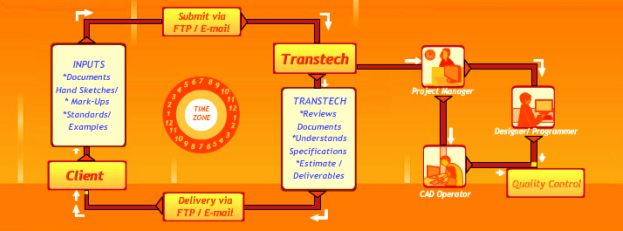

We deliver Automation, Engineering & IT solutions to our clients around the world following the successful offshore model.

The advantages of partnering with Trans Tech are :
- Communication : Both the promoters have been educated & lived in USA & aware about the western business culture. Most of the staff is educated in English medium & has excellent written as well as spoken English skills. We have a devised a specific way to manage the project in a day to day interaction using email / FTP.
- Quality & Delivery : The management & staff has expertise in necessary domain & committed for quality & delivery to meet project deadlines. For US based clients, we use the time difference advantage as we are ahead of them by about 11 hours. So we work while they sleep. Client can offload the work before leaving for the day & get the ready job on next day morning!
- Training : The staff is always trained to keep update about the latest changes in various domains.
- Confidentiality : We sign a Non Disclosure Agreement & assure complete confidentiality with respect to all transactions.
- Flexibility : During peak load & non availability of the expertise in various domains, outsourcing is the best option.
- Focus on Core Areas : Client can focus on core competencies while outsourcing the non core activities like drafting, documentation.
- Cost Benefits : Last but not the least, we offer these services to at most competitive rates, as compared to prevailing rates in North America & Europe. We charge based on man hour or lumpsum based on mutual agreement. Payment can be done by monthly or based on milestone by wire transfer or check.
- Cost Benefits : Last but not the least, we offer these services to at most competitive rates, as compared to prevailing rates in North America & Europe. We charge based on man hour or lumpsum based on mutual agreement. Payment can be done by monthly or based on milestone by wire transfer or check.
- Long Term Relationship : As we go along with the project, both organizations gets familiar with each other's style from all aspects. As we develop the relationship, this helps in reducing implementation time & hence the costs.